50代からのお金の育て方
映像の世界観と編集方法｜5案・静止画20枚・動画素材7件
2026年9月19日版。スタッフ比較用の初期提案。見本はすべてAIで制作した「配置見本」であり、こよみは架空の人物です。完成動画や運用実績ではありません。
推薦：こよみの資産手帖
主力は B「こよみの資産手帖」。冒頭と章の間にA「窓辺の暮らし」の短い情景を添える構成を推薦します。家族のために使ってきたお金を、これからの自分の暮らしへつなげるチャンネルです。手帖なら、問い・数字・迷い・次の一歩が一つの画面様式に収まります。
月次回も「今月の残高→変化の理由→迷ったこと→次月の予定」を同じ見開きに置けます。値上がりを誇る演出にせず、視聴者が自分の家計を考えやすい形にできます。
全編の仮配分は、動画20〜30％、静止画・自作図解70〜80％。本数を重ねるための出発点であり、秒数や比率を達成するために画面を切り替えません。
既定の方針と今回の提案
| 区分 | 引き継ぐ内容・今回決める内容 |
|---|---|
| 既定：視聴者 | 主に50代女性。NISAなどを始めているが、積立を続けるだけでよいか、60代以降にどう使うか迷い始めている |
| 既定：コンセプト | 投資だけでなく、退職・介護・相続・家族の支出を含めて、自分のお金の育て方を考える |
| 既定：立ち位置 | 先生として正解を教え込まず、こよみの問いや気づきから一緒に考える |
| 既定：声 | ナレーター「あのん」。落ち着いた人の声。過度に明るくせず、専門語を日常の言葉へ言い換える |
| 既定：架空モデル | こよみ、52歳、会社員、夫と成人した子ども。夫が主な生活費を負担。自身も働き、子どもの節目の支出を負担してきた。自分で扱う資産800万円 |
| 引き継ぐ初期案 | 現預金400万円、全世界株式240万円（新NISA）、S&P 500 120万円（旧NISA）、国内高配当ETF〈1489〉40万円（課税口座）。投資の推奨配分ではなく、番組の架空設定 |
| 既定：実績の扱い | あのん本人の資産・経験とは分ける。投資失敗の設定は独立した創作とし、実在の個人や事件に結びつけない |
| 今回の提案 | 世界観5案、画面の構図、素材候補、字幕仕様、比較用60秒台詞、切り替え方、購入順序 |
| 今回の依頼で優先 | 固定秒数の機械的な切り替えをしない。毎回の顔出し・実践撮影を必須にしない |
「おひとりさま」は扱えるテーマですが、現在のこよみの家庭設定とは分けます。別の架空ケースとして紹介すれば、既婚視聴者にも将来の一人暮らしの備えとして伝えられます。
5案の比較
評価は企画との適合から行った制作上の判断です。視聴者テストや再生数の検証結果ではありません。◎＝特に相性がよい、○＝適合、△＝運用に工夫が必要。
| 案 | 画の構造 | 企画への適合 | 数字の読みやすさ | 継続制作 | 主な役割 |
|---|---|---|---|---|---|
| A 窓辺の暮らし | 実写が画面全体を占める | ◎ | △ | ○ | 共感・余韻 |
| B こよみの資産手帖 | 俯瞰の紙面と整理された記録 | ◎ | ◎ | ◎ | 主力・月次報告 |
| C 大人のマネーマガジン | 余白65％＋写真35％の編集ページ | ○ | ◎ | ◎ | 制度・ニュースの整理 |
| D 暮らしのコラージュ | 切り抜き写真＋簡素なイラスト | ◎ | ○ | △ | 家族・介護・相続の関係 |
| E 明るい書斎 | 書棚を縁に、中央の大きな白い面 | ○ | ◎ | ◎ | 本・考え方の解説 |
5案とも同じ4場面で比較します。画像を押すと拡大できます。各見本の字幕は、その場面の代表的な1フレーズです。完成動画では発話に合わせて全文字幕を送ります。
A｜窓辺の暮らし
感じてほしいこと：「この悩みは、私の生活とつながっている」。朝の食卓や空いた椅子を通して、子育て後の静かな時間を表します。家族の支出がひと区切りついた、こよみの導入に合います。
画の設計： オフホワイト、淡い木、くすんだ深緑。自然な窓光、リネン、陶器。実写を全画面に使い、題字は控えめな明朝、数字と字幕は太めのゴシック。豪邸・高級車・札束は使いません。
使い分け： お茶、カーテン、移動など意味のある動作は動画。問いや余韻は静止画。金額比較に入ったら写真の動きを止め、無地の面へ移します。数字の背後で風景を動かし続けません。
語り手： 通常は姿を出さず、一人称の問いで人格を伝えます。必要なら章頭の右上に名前だけを2〜3秒。アバターは初回・終わりに任意で小さく出す程度とし、常設しません。
制作： 中程度。絵そのものは調達しやすい一方、住まい・季節・手元の年齢感をそろえる選定に時間がかかります。毎回撮影は不要。家の外観まで固定すると継続負担が増えます。
向く話： 教育費の終わり、退職への気持ち、自分の楽しみ、家族との会話。単独では弱い話： 税制の条件分岐、複数銘柄比較、相続手順。図解への切り替えが必要です。
動画候補：M05〈窓辺〉、M06〈お茶〉、M07〈家計簿／必要時のみ〉。
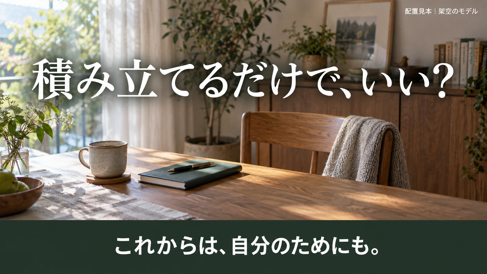
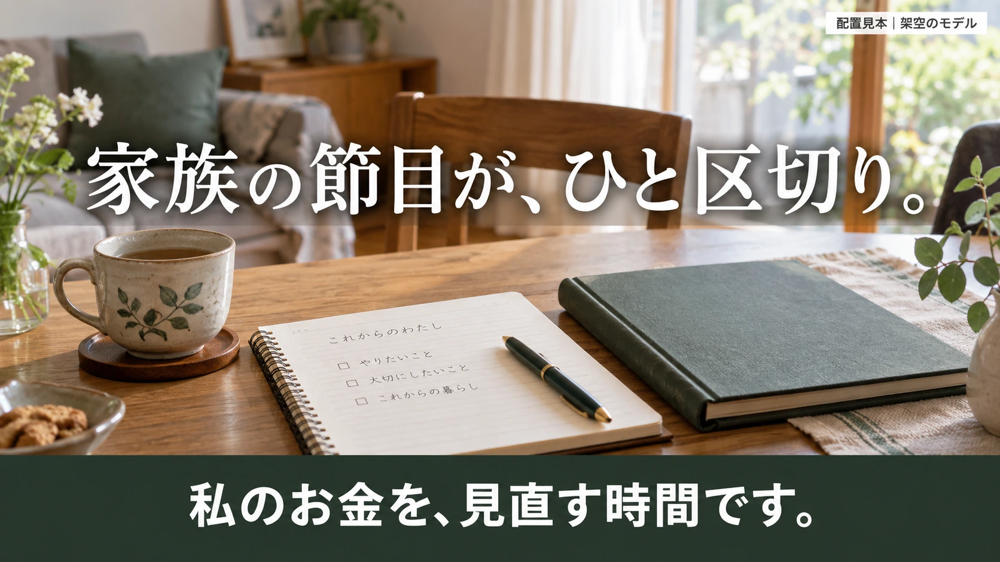
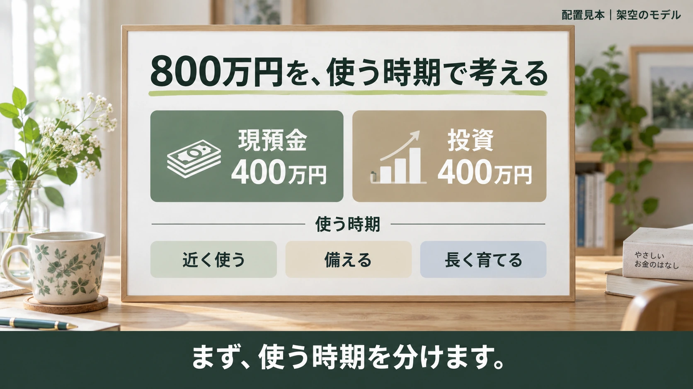
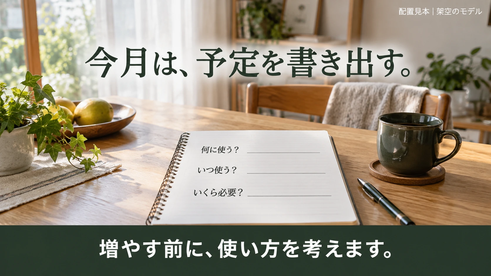
B｜こよみの資産手帖
感じてほしいこと：「私も一度、書き出してみよう」。専門家の黒板ではなく、一緒に整理していく見開きです。月次の仮想資産報告や、失敗からの気づきを無理なく定番化できます。
画の設計： 真上から見た白に近い紙、薄いセージの罫線、墨色の文字、少量の黄土色の付箋。紙の質感は弱くし、文字の背景は均一に。題字は落ち着いた明朝、本文・金額はゴシック。見開き中央に重要な文字をまたがせない設計にします。
使い分け： 書き始め・ページをめくる短い動作は動画。問い・記録・月次表は静止画。配分や使う時期は紙面上の図解。図解は上から順に出して、最後は全体を止めて見せます。
語り手： 通常は姿なし。章頭の上端に「こよみのメモ」。アバターを採用するなら、最初と最後だけ上側の余白に小さく置き、金額と字幕を圧迫しません。手書き風の長文や、ペンが全文章を描く演出は使いません。
制作： 初回は中、2本目以降は小。見開き・比較・まとめの3テンプレートを固定し、数字と問いを差し替えます。静止画中心なので、ナレーションの間に合わせて保持時間を調整できます。
向く話： 月次報告、NISAの見直し、使う順番、介護費の予定、相続準備のメモ。単独では弱い話： 社会情勢の現場感や複雑な家系関係。写真枠や関係図を補います。
動画候補：M01〈電卓〉、M02〈ノート〉、M04〈暖かい光の手元〉。
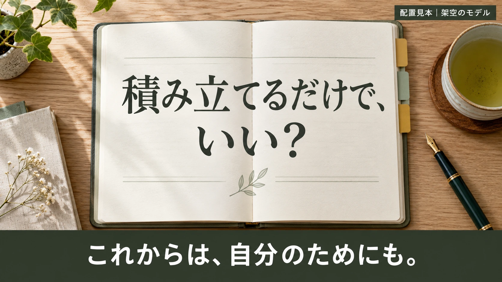
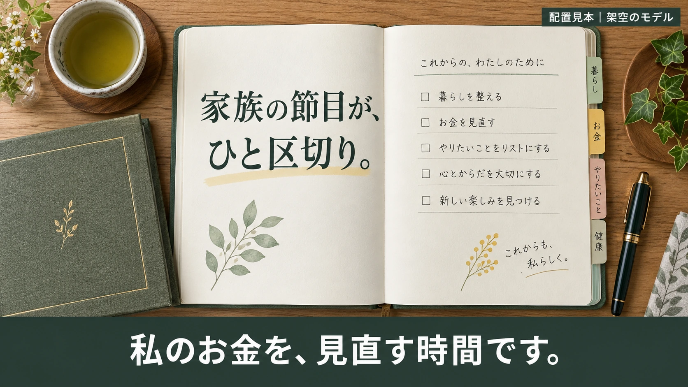
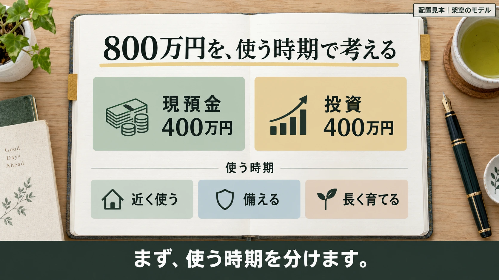
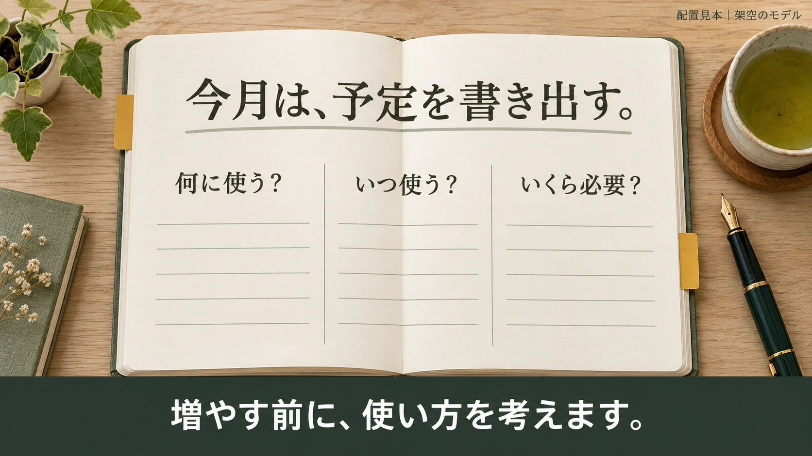
C｜大人のマネーマガジン
感じてほしいこと：「難しい話も、落ち着いて整理できそう」。雑誌の特集を読むように、悩みを見出し、情報を小さなまとまりにします。トレンドを追う回でも煽らず、暮らしへの影響を伝えられます。
画の設計： アイボリーの余白に紺色の文字、少量のテラコッタ。写真は四角い枠で画面の約35％に制限。題字は明朝、情報はゴシック。紙面の段組みは最大2列とし、スマホで新聞のように細かくしません。
使い分け： 写真枠の中だけで手元や暮らしの動画。見出し・比較・まとめは止めた紙面。制度変更は「何が変わる／自分に関係する条件」の2面で図解。現金・株式の数値と背景を同時に動かしません。
語り手： 常設アバターなし。冒頭・締めに「こよみの視点」という短い囲みを上側へ。人格は情報を選んだ理由と問いで出し、専門家の顔写真のような演出はしません。
制作： 初回は中、以後は小。枠・見出し・出典位置を固定できます。ただし情報を詰め込むと視聴者が読む作業に追われるため、1画面1論点を守ります。
向く話： NISA、金利、円安、年金、税制ニュース。単独では弱い話： 投資失敗の後悔や家族への複雑な気持ち。Aの情景や声の間を足すと伝わります。
動画候補：M01〈電卓〉、M03〈書類と計算〉、M05〈窓辺の写真枠〉。
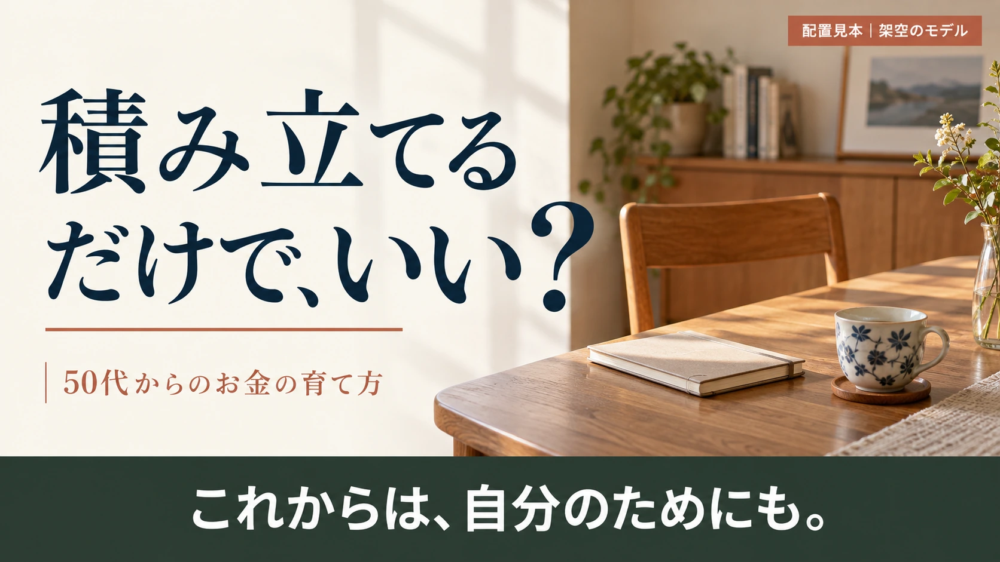
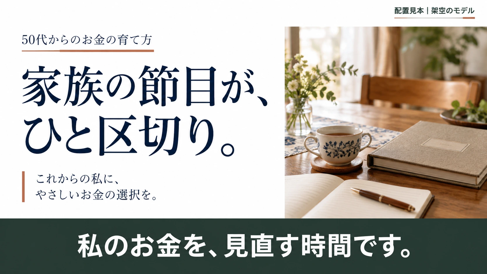
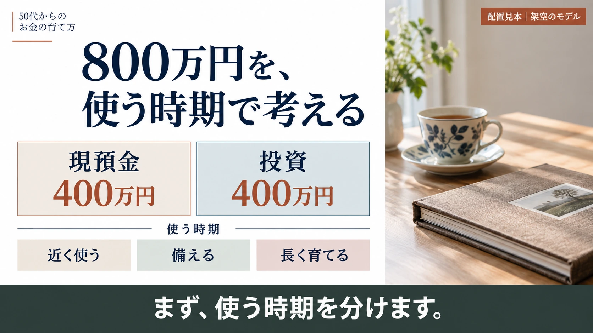
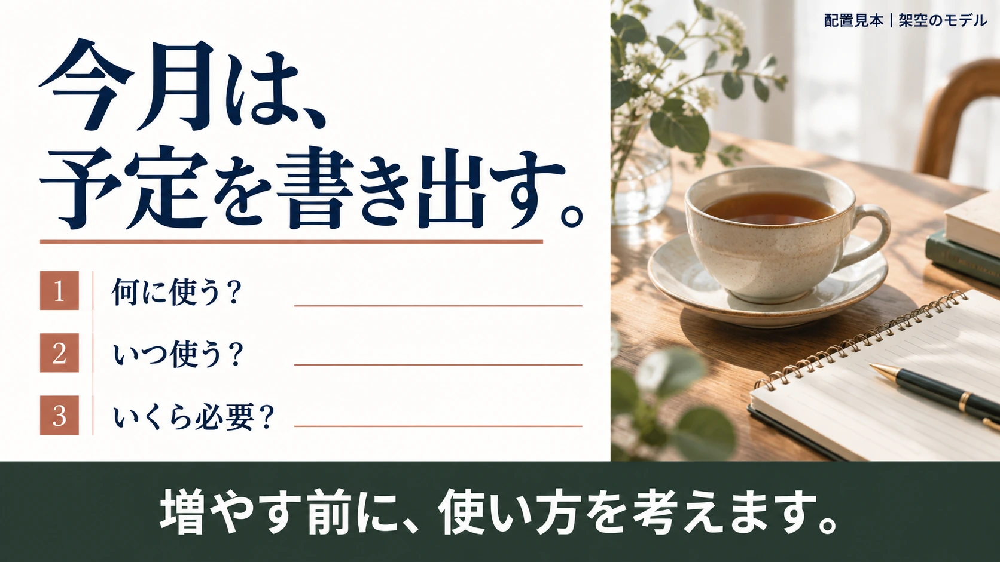
D｜暮らしのコラージュ
感じてほしいこと：「いろいろな悩みが、ひとつずつほどけていく」。お茶や封筒などの写真に、家族・時間・備えのイラストを添えます。撮影しにくい介護や相続を、人を特定せず説明できます。
画の設計： 平らな生成りの背景、セージと淡い杏色、細い墨色の線。切り抜き写真とイラストの役割を分け、重ねすぎません。文字はゴシック中心。子ども向けのシールや、賑やかな絵文字調にしません。
使い分け： カップや筆記の短い動画を四角い小窓で使用。日常や問いはコラージュ静止画。家族・費用・制度の関係は図解。画面内の要素を一つずつフェード表示し、飛び跳ねる動きは避けます。
語り手： 原則姿なし。人型を使う場合も説明用の匿名アイコンに留め、こよみの実際の家族の写真と誤認させません。語り手のアバターを入れるなら締めだけ上側の余白に小さく配置。
制作： 中〜大。素材の切り抜きと線の統一が必要。最初に「家・人・封筒・時計・植物」の部品を揃えると継続しやすくなります。毎回すべての部品を作り直しません。
向く話： 介護、相続、家族会議、おひとりさまの備え、気持ちの整理。単独では弱い話： 細かな利回りや銘柄比較。情報が多い回では装飾を減らしてBに寄せます。
動画候補：M02〈ノート〉、M04〈暖かい光の手元〉、M06〈お茶〉。
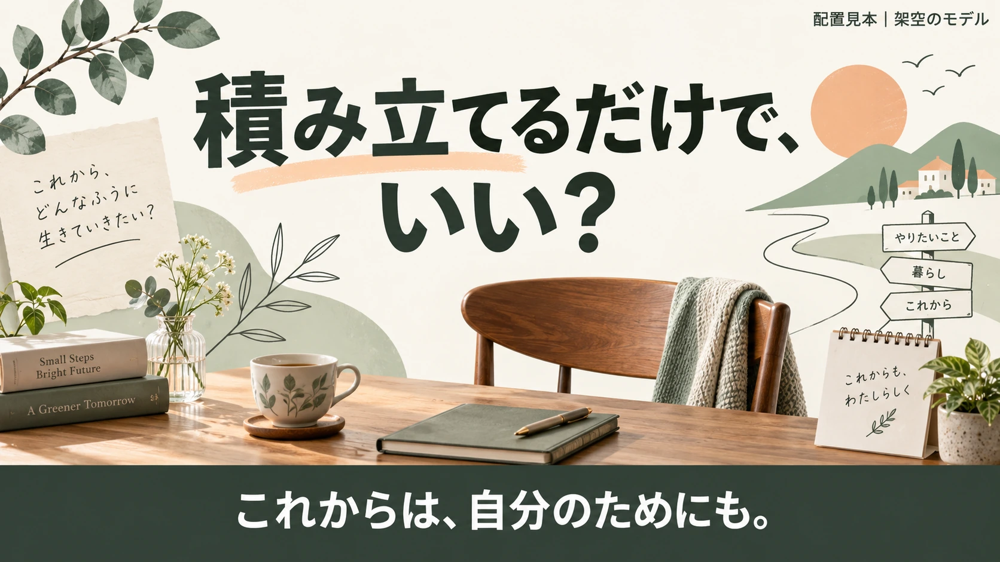
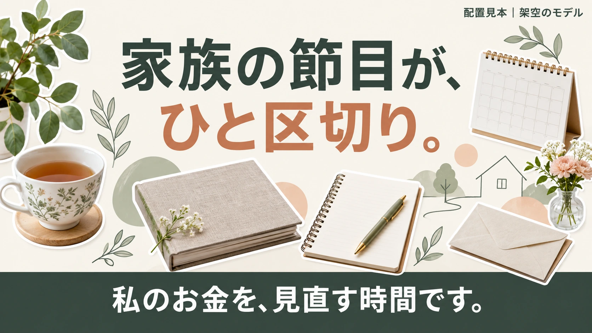
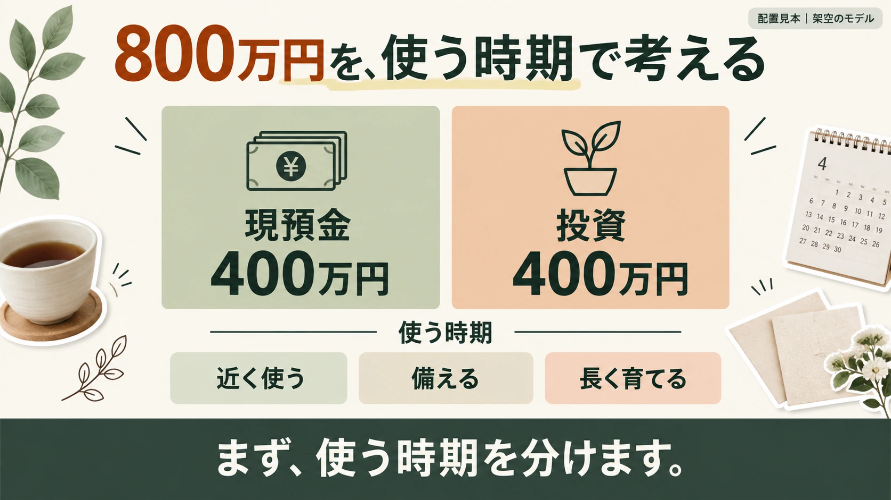
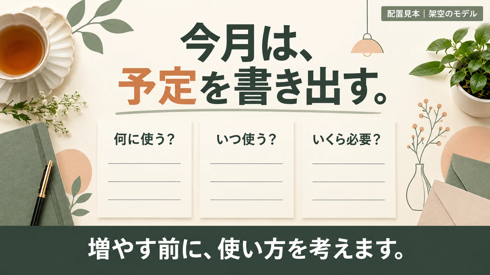
E｜明るい書斎
感じてほしいこと：「焦らず、考え方から学べそう」。既存の全チャンネル映像提案で示されていた、お金チャンネルの方向を具体化した案です。
画の設計： 淡い木の書棚を縁に置き、中央約70％を白い説明面に。砂色・深い苔色・茶墨の文字。横から入る昼光。題字は明朝、図解と字幕はゴシック。暗い重厚な書斎や、権威を示す肩書きの装飾は使いません。
使い分け： 本を開く・メモをする導入は動画。本の考え方、出典、図解は中央の静止画面。長い説明中は背景を動かしません。本を紹介するときは実在する本文を確認し、著者の主張とこよみの解釈を分けます。
語り手： 机の前に先生を常設しません。冒頭か締めに名前のみ、任意のアバターも画面上隅に限定。問いかけの言葉で、解説者との距離を近く保ちます。
制作： 小〜中。固定背景を使い回せます。章ごとに同じ中央パネルが続くと講義調になりやすいため、暮らしの情景と交互に使います。
向く話： 書籍、長期運用の考え方、退職後の使い方。単独では弱い話： 家族の生活感や月次の小さな迷い。書斎に戻る回数を減らす工夫が必要です。
動画候補：M03〈書類と計算〉、M04〈暖かい光の手元〉、M05〈窓辺〉。
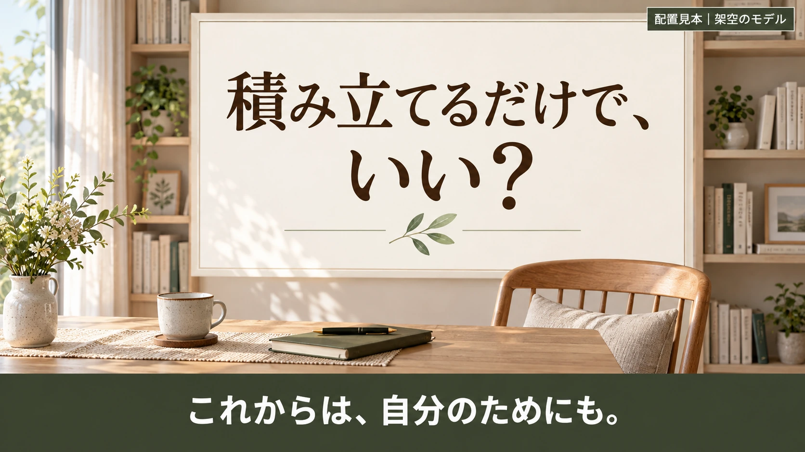
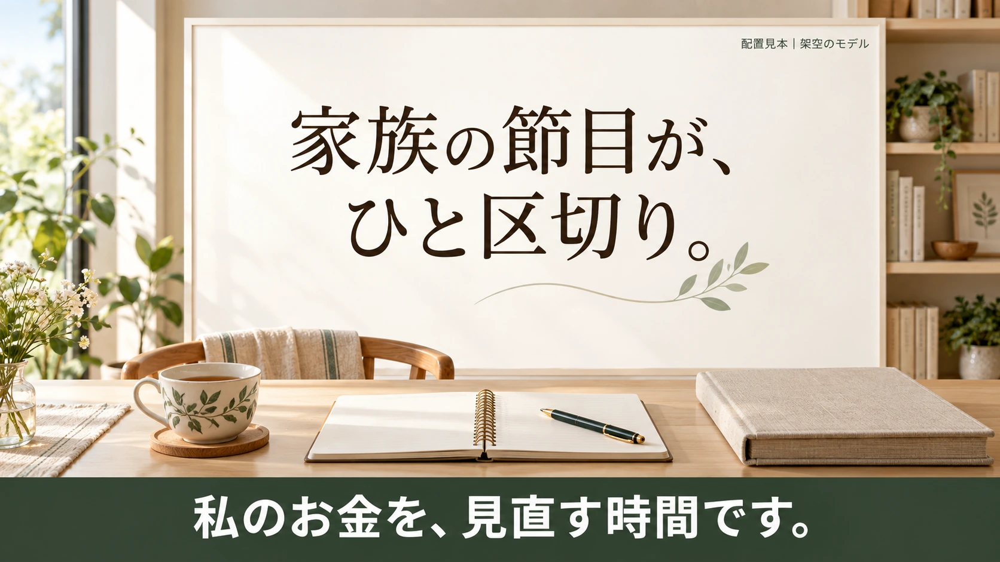
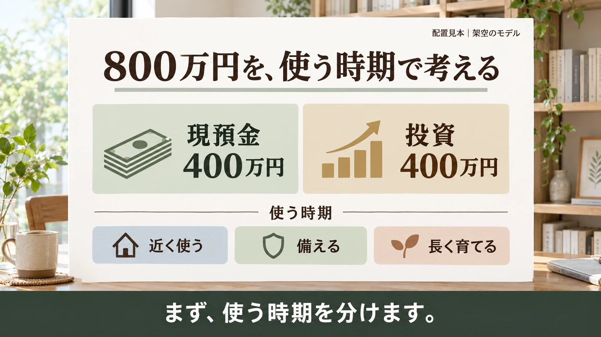
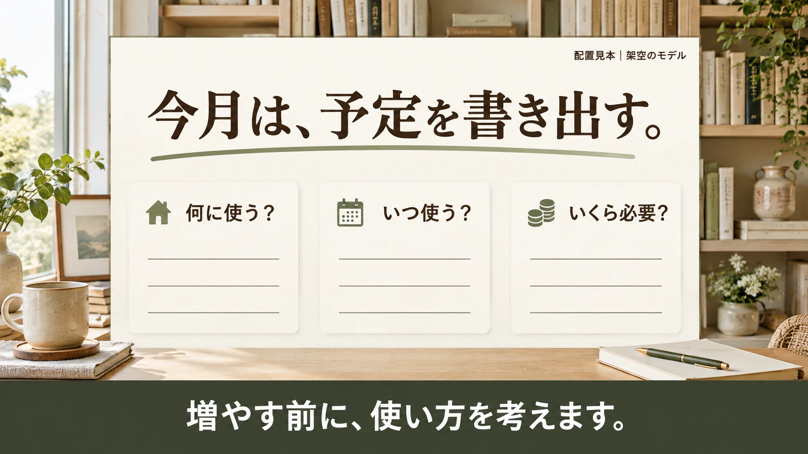
同じ内容で比べる60秒
完成台本は対象フォルダにありません。既存の第1回企画と、こよみの初期設定をもとに、今回の比較用台詞を作りました。場面③は「考え方」の図解です。実在の書籍や研究の引用を創作していません。
| 場面 | 比較用の話す内容／全文字幕の原稿 |
|---|---|
| ① 0〜10秒 | NISAは続けてきたけれど、この先も積み立てるだけでいいのかな。私も、少し立ち止まっています。 |
| ② 10〜22秒 | 子どもの大きな支出が、ひと区切り。これからは、自分のためにもお金を育てたい。そんな、こよみの架空のケースです。 |
| ③前半 22〜34秒 | 自分で扱うお金は、800万円。現預金が400万円、投資が400万円、という初期設定です。 |
| ③後半 34〜48秒 | まず考えたいのは、使う時期です。近く使うお金、もしもの備え、長く育てるお金。今の持ち方と、合っているでしょうか。 |
| ④ 48〜60秒 | 今月は、何に、いつ、いくら使いそうかを書き出します。増やす前に、使い方を。一緒に整理してみませんか。 |
約250字。収録速度と間によって秒数は調整します。「こちら」「このグラフ」のように画面を見ないと意味が通らない言葉を使わず、金額と分類を声でも伝えます。分類の金額はまだ決めていません。現預金400万円をすべて近い支出へ割り当てた図ではありません。
Aの60秒｜情景から数字へ
| 秒数 | 話の要旨 | 区分・素材 | 画面の動き | 字幕 |
|---|---|---|---|---|
| 0〜10 | ①積立への迷い | 静止画 A1 | 背景だけ100→103％の緩い寄り。問いと字幕は固定 | ①を文節で2〜3回に分ける |
| 10〜17 | ②家族の節目 | 動画 M06 | お茶を用意する動作を一度見せる。原音は消す | ②前半 |
| 17〜22 | ②自分のこれから | 静止画 A2 | 食卓の余韻を保持。0.3秒のクロスフェード | ②後半、架空ケースを明記 |
| 22〜34 | ③前半800万円 | 図解 A3を編集用に再構成 | 無地の説明面へ。現預金→投資を順に表示し、最後6秒は静止 | ③前半、金額を読み上げる |
| 34〜48 | ③後半使う時期 | 同じ図解 A3 | 下段3項目を順に表示。全項目が出てから8秒保持 | ③後半、分類を順に送る |
| 48〜60 | ④予定を書き出す | 静止画 A4 | 3つの問いを順に表示。最後4秒は止める | ④を文節で送る |
Bの60秒｜手帖を一緒に開く
| 秒数 | 話の要旨 | 区分・素材 | 画面の動き | 字幕 |
|---|---|---|---|---|
| 0〜10 | ①積立への迷い | 静止画 B1 | 紙面へ背景のみ2％寄る。問いは固定 | ①、最大2行 |
| 10〜17 | ②家族の節目 | 動画 M02 | 筆記の一動作。カメラの揺れが強ければ静止画B2に変更 | ②前半 |
| 17〜22 | ②自分のこれから | 静止画 B2 | 余白の多い見開きへ切り替え、そのまま保持 | ②後半 |
| 22〜34 | ③前半800万円 | 図解 B3 | 見開きの左右を順に点灯。数字のカウントアップはしない | ③前半 |
| 34〜48 | ③後半使う時期 | 同じ図解 B3 | 3つの分類を追加。最後8秒は全体を静止 | ③後半 |
| 48〜60 | ④予定を書き出す | 静止画 B4 | 問いを1つずつ出す。紙をめくる長いアニメーションは不要 | ④、最後の一文で4秒保持 |
Cの60秒｜特集ページを読む
| 秒数 | 話の要旨 | 区分・素材 | 画面の動き | 字幕 |
|---|---|---|---|---|
| 0〜10 | ①積立への迷い | 静止画 C1 | 見出しを一度だけフェード表示。その後固定 | ①、最大2行 |
| 10〜17 | ②家族の節目 | 動画 M05 | 写真枠内だけ窓辺を動かす。見出し・字幕は静止 | ②前半 |
| 17〜22 | ②自分のこれから | 静止画 C2 | 動画枠を生活写真へ置換。紙面の位置は保つ | ②後半 |
| 22〜34 | ③前半800万円 | 図解 C3 | 左の白い領域で2つの金額を順に表示 | ③前半 |
| 34〜48 | ③後半使う時期 | 同じ図解 C3 | 下段3項目を追加。全体を8秒以上静止 | ③後半 |
| 48〜60 | ④予定を書き出す | 静止画 C4 | 1ページの実践メモへ。最後4秒は静止 | ④、情報を増やさない |
Dの60秒｜暮らしの要素をほどく
| 秒数 | 話の要旨 | 区分・素材 | 画面の動き | 字幕 |
|---|---|---|---|---|
| 0〜10 | ①積立への迷い | 静止画 D1 | 小物を同時に見せ、問いだけフェード表示 | ①、最大2行 |
| 10〜17 | ②家族の節目 | 動画 M06 | コラージュの小窓でお茶の動作。周囲の絵は固定 | ②前半 |
| 17〜22 | ②自分のこれから | 静止画 D2 | 写真小物と線画を保持。切り抜きを飛ばさない | ②後半 |
| 22〜34 | ③前半800万円 | 図解 D3 | 2つの金額を順に表示。飾りを減らす | ③前半 |
| 34〜48 | ③後半使う時期 | 同じ図解 D3 | 3つの分類を段階表示。最後8秒は全体を静止 | ③後半 |
| 48〜60 | ④予定を書き出す | 静止画 D4 | 3つの問いだけを追加し、最後4秒保持 | ④、文字とイラストを競わせない |
Eの60秒｜書斎でゆっくり考える
| 秒数 | 話の要旨 | 区分・素材 | 画面の動き | 字幕 |
|---|---|---|---|---|
| 0〜10 | ①積立への迷い | 静止画 E1 | 背景だけ100→102％。中央の問いは固定 | ①、最大2行 |
| 10〜17 | ②家族の節目 | 動画 M04 | メモをする手元の短い動作。速度は再生確認後に調整 | ②前半 |
| 17〜22 | ②自分のこれから | 静止画 E2 | 書斎の生活小物へ戻し、保持 | ②後半 |
| 22〜34 | ③前半800万円 | 図解 E3 | 中央パネルへ2つの金額を順に表示 | ③前半 |
| 34〜48 | ③後半使う時期 | 同じ図解 E3 | 3項目を追加。書棚を動かさず、最後8秒保持 | ③後半 |
| 48〜60 | ④予定を書き出す | 静止画 E4 | 中央パネルを3つの問いに置き換え、最後4秒保持 | ④、締めでも急がない |
5案とも合計60秒です。14秒の図解保持も許容します。切り替えの理由は「問いから生活へ」「生活から数字へ」「理解から実践へ」。静止画全体を拡大して文字まで動かすのではなく、背景と編集用の文字を分けて動かします。
動画素材の具体候補
確認日：2026年9月19日。7件すべて個別公式ページの商品説明を確認。再生確認は0件です。 ブラウザのアクセス確認が通らなかったため、動きの速さ・手ぶれ・開始終了フレーム・実際の画質は未確認です。説明・タイトルから判断した箇所を分けて記載しました。ここには公式プレビューへのリンクを置き、未確認の映像や無許諾の試聴ファイルを転載していません。
| ID | 素材・提供元 | 利用区分／確認できた仕様 | 合う案 |
|---|---|---|---|
| M01 | 電卓を使う手元／Pexels 6963965 | 無料・1920×1080・16:9・12秒・25fps | B・C |
| M02 | ノートに書く／Pexels 5480588 | 無料・解像度／比率／長さ未確認 | B・D |
| M03 | 書類を計算／Artlist 6136973 | 定額候補・解像度／比率／長さ／価格未確認 | C・E |
| M04 | 暖かい光の筆記／Artlist 345902 | 定額候補・解像度／比率／長さ／価格未確認 | B・D・E |
| M05 | カーテンのある窓／Mixkit 3977 | 無料・FHD 1920×1080・16:9・11秒・24fps | A・C・E |
| M06 | ティーバッグでお茶／Mixkit 1511 | 無料・1920×1080・16:9・17秒・30fps | A・D |
| M07 | 肩から下の家計簿／PIXTA 31950712 | 単品HD1080 税込9,900円・1920×1080・16:9・21秒・29.97fps | A（必要時） |
M01｜A Person Using Calculator
提供元：Pexels／作者 Mikhail Nilov／素材ID 6963965。電卓で計算しながらメモをする手元という商品説明。家族の支出や「一度、書き出してみる」という台詞に合わせます。Bの見開き前、Cの写真枠向き。12秒全部を使う必要はなく、計算の1動作を5〜7秒程度で選びます。
価格0円。仕様は上表のとおり。ページ説明確認のみ、再生未確認。外注時は素材IDと取得日・ライセンスを共有し、画面内の文字・商標と人物の扱いを確認。ストックの人物をこよみ本人や詐欺被害者として扱いません。
M02｜A Person Writing on a Notebook
提供元：Pexels／作者 Dziana Hasanbekava／素材ID 5480588。コーヒーカップのある木のテーブルでノートに書く人物。筆記の動作は説明で確認、速度やカメラの動きは未確認です。「私のお金を見直す時間」「何に使うか書き出す」に。B・D向き。
価格0円。取得できた本文では解像度・縦横比・長さを確認できていません。横長1920×1080で使えることをダウンロード画面で確認してから採用。外注時はM01と同様に権利情報を渡し、写り込むノートの内容を架空の記録として読み上げない運用にします。
M03｜Calculating, Totaling, Paperwork, Working
提供元：Artlist／作者 Film spirits／素材ID 6136973／シリーズ Calculating Bills。タイトルから、書類の数字を計算する作業の素材と判断。具体的な手の動作や画角は未確認です。支出の棚卸し、退職前の家計整理に。Cの写真枠、Eのメモ場面に合う候補です。
定額契約での調達候補。解像度・比率・長さ・Footageを含む現行プランの確定価格は未確認。料金ページで取得できたAI生成プランの金額は、この素材を使える価格として転記していません。外注編集者が元素材を使うには、担当者を含むライセンス範囲の確認が必要です。個人契約の素材をそのまま共有フォルダへ配る前提にしません。
M04｜Notebook, Writing, Hands, Warm Light
提供元：Artlist／作者 Continuous Content／素材ID 345902／シリーズ Library Visit。タイトルから、暖かい光の下でノートを書く手元と判断。筆記速度・カメラ移動・本の写り方は未確認。「考えを言葉にする」「今月の気づきを残す」に合わせる候補。B・D・E向きです。
定額契約候補。解像度・比率・長さ・確定価格は未確認。最初の有料候補はこのシリーズです。Bの世界観を採用したとき、筆記・読書の複数カットを揃えられるかプレビューで確認します。外注時の確認はM03と共通。Footage収録と席数、制作・公開期間を確認してから契約を判断します。
M05｜View of a window with a curtain
提供元：Mixkit／個別作者名は取得本文に表示なし／素材ID 3977。窓とカーテンの情景。風のタグはありますが、揺れの程度は未確認です。話題の転換や「少し立ち止まる」の余韻に。Aの全画面、Cの小窓、Eの章間に使う候補です。
価格0円、Stock Video Free License。11秒・24fps。FHD版1920×1080を選べば16:9です。4K版4096×2160は厳密には16:9ではないため、同じものとして扱いません。外注時は個別ページのFree License表示を保存し、別素材のRestricted Licenseと取り違えないようにします。再生未確認。
M06｜Woman preparing a cup of warm tea with tea bag
提供元：Mixkit／個別作者名は取得本文に表示なし／素材ID 1511。朝食・コーヒーバーでティーバッグのお茶を用意する接写。商品説明ではミルク・砂糖・ディスペンサーも登場。「ひと息ついて考える」場面に。A・D向きです。こよみの自宅を撮影した映像とは扱いません。
価格0円、Stock Video Free License。1920×1080、16:9、17秒、30fps。動作の説明を確認、再生は未確認。外注時はM05と同様にライセンスを保存。商業施設の小物が目立つ場合は、自宅場面に使わず別の情景へ回します。
M07｜肩から下 家計簿をつける若い女性
提供元：PIXTA／作者 D&M.CLIPs／素材ID 31950712。日本の家計簿の手元を探すときの補欠候補。20〜30代のタグがあるため、52歳のこよみ本人としては使いません。「家計を整理する一般的な場面」のみ。Aの補足用で、初回の購入優先度は低めです。
HD1080版は1920×1080、MOV＋MP4、21秒、16:9、29.97fps、音声なし、税込9,900円。モデルリリース取得済みの表示を確認。単品購入のほか定額導線もありますが、定額契約額は未確認です。法人登録と委託先の使用範囲を確認し、委託先が別案件へ転用しない運用にします。商品説明確認のみ、再生未確認。
チーム利用の確認先
- Pexels： 無料、クレジット必須ではなく加工可能。人物の不適切な文脈や推奨の誤認、素材の再販売等に制限があります。編集担当へ公式URL・取得日・用途を渡します。公式ライセンス
- Mixkit： 今回の2件はFree License表示。商用YouTubeで使える区分ですが、素材ごとに確認します。再配布などの細則は利用規約も併読します。Free License
- Artlist： 個人契約のログインや元素材の共有は不可と説明されています。Teamプランの参加者による共同利用、契約中に制作・公開する条件を確認。料金・法人規模・外注者の席数は今回未確定です。ライセンス説明／チームの説明／料金確認
- PIXTA： 単品購入では、登録組織の制作物に使う委託先への受け渡しについて公式FAQに説明があります。定額は共有条件が異なるため、単品と混同しません。単品の共有条件／定額の共有条件
調達方針と購入優先度
初動の主力サイトはPexels。継続制作で画の統一が足りなくなった段階の有料主力候補をArtlistとします。 既存提案のArtlist方針を残しつつ、今回はBを推すため、まず無料素材と自作の紙面で1本を組む判断です。最初から複数の定額サービスを契約する必要はありません。
| 優先度 | 具体的な判断 | 理由・利用場面 |
|---|---|---|
| 1：初回 | M01・M02をPexelsで、M05・M06をMixkitで確認して選ぶ。素材購入費は0円 | 計算・筆記・ひと息つく情景は無料で試せる。再生、横長画質、写り込みを確認して採用 |
| 1：初回 | Bの手帖・比較・まとめを自作テンプレート化 | 金額・出典・制度の説明は、既製の映像より編集できる図解が重要 |
| 2：方向決定後 | Artlist M04〈Library Visit〉、次にM03〈Calculating Bills〉のシリーズを検討 | 同じ光・撮影者のカットが複数必要になったとき有効。Footageを含むプランと編集担当の利用条件・現行価格の確認後に判断 |
| 3：不足が具体化したら | PIXTA M07のHD1080版、税込9,900円 | 日本の家計簿の質感が不可欠な場合のみ。年齢設定には合わないため、無料代替があれば買わない |
| 任意 | 自分で撮るのは、無記名の手帖・いつものカップ・封筒の俯瞰を一度まとめて | 10〜15秒の小物素材を数種類ストックすれば固有感が出る。本人の顔・家庭・毎月の撮影は不要 |
| 今は不要 | 高額な金融チャート動画、フルアニメーション、口パクアバター、派手な転換素材、AI動画用の追加契約 | このチャンネルの価値は問いと説明。数値は自作図解で正確に扱える |
AI生成は、匿名の室内・手帖の背景・生活小物・説明用のイラストに向きます。金融機関の実画面、制度の公式資料、実際の売買記録、研究結果をAIで捏造しません。手元の動作は実写素材、数字と制度は自作図解、気持ちの情景は静止画、という分担にします。
今回、購入・契約・有料素材のダウンロードは行っていません。7件は採用確定素材ではなく、編集担当が公式プレビューを再生して選ぶ候補です。
編集スタッフが共通で守る画面設計
声と文字
あのんの声を中心に、落ち着いた会話として読みます。目安は毎分240〜300字ですが、金額・分類・気づきの後では間を取ります。断言よりも「私はここが気になりました」「一度、分けてみます」を使い、毎回の学びを人格にします。
字幕は下18〜20％を専用領域にし、背景映像と重ねず、濃い無地の帯に白い太字。1920×1080でおおむね68〜80pxから試し、1行22字程度・最大2行。助詞の前や金額の途中で切らず、句や文節で送ります。金額は80〜100px、図解ラベルは56〜64pxから調整。色だけで区別せず、項目名も必ず添えます。
サンプルはAI生成のため、文字や飾りも画像に含まれています。本制作では背景・金額・見出し・字幕を別々の編集要素にし、正しい日本語と数値を入力し直します。見本の小さな装飾文や上昇アイコンは必須ではありません。月次画面では上昇を暗示する飾りを外し、実際の増減を中立に示します。
切り替えと音
話題が切り替わる箇所で0.2〜0.4秒の短いフェード、数字の比較では基本カット。ゆっくりした寄りは写真背景だけに限定し、図解・字幕を動かしません。読み終える前の切り替え、長い高速筆記、字幕の跳ねやタイプ音は使いません。
BGMは任意。使うなら旋律が強すぎないものを声より十分低くし、重要な数字ではさらに下げます。場面ごとの効果音で注意を奪わず、耳だけで意味が通るかを音声だけでも確認します。
月次回に育てる
Bの見開きに「月末残高／前月からの入出金／評価額の変化／今月の判断」を固定配置します。残高の増加と運用益を混同しません。購入日・口数・取得価額・評価基準日・価格の出典が決まるまでは、月次の利益を作りません。
初期800万円は架空設定。毎月の追跡は「こよみのモデル運用」と明示し、実際の相場データを当てる場合も本人の実績とは呼びません。入金を増やす、現金を残す、介護に備えるなど、売買しなかった判断も一つの回になります。
未確認事項と制作前の判断
| 項目 | 現在の状態 | 次に確認する内容 |
|---|---|---|
| 本編台本 | 台本フォルダはREADMEのみ | 第1回の完成台詞に合わせて素材の意味と尺を最終調整 |
| 見本の位置づけ | 20枚は世界観・字幕位置の比較用 | 採用案を編集可能な文字と背景に分け、余分な装飾を減らす |
| 動画7件 | 個別公式説明は確認、再生は未確認 | 動作・手ぶれ・年齢感・商標・採用区間を再生して確認 |
| 不足する仕様 | M02の解像度・比率・長さ、M03・M04の仕様 | ダウンロード選択画面または提供元で確認 |
| 有料契約 | 未購入。Artlistの素材用プラン価格・席数は未確定 | Footage収録、法人・外注者の利用範囲、契約期間、総支払額 |
| 素材の人物 | こよみ本人ではない | 特にM07の若い人物を52歳本人として紹介しない |
| 月次運用 | 800万円と仮配分のみ | 開始基準日、保有口数、取得価額、入出金ルール、評価価格の出典 |
| 見やすさ | 20枚の見本を目視点検 | 採用案の実動画をスマホ・テレビ・音声のみで確認。50代視聴者による検証は未実施 |
| 共有ページの実画面 | ブラウザ接続の不具合により、PC・スマホの実表示確認は保留 | 公開URL・画像ファイルの取得確認と、実画面での確認は分けて扱う |
今回の推薦はB。数字の読みやすさ、暮らしへの近さ、月次で作り続けやすいことの3点を優先しています。Aは情景、Cは制度・トレンド、Dは家族関係、Eは書籍・考え方の回で活かせます。5案を毎回ランダムに混ぜず、主力の書体・字幕・余白を揃えます。
参照資料と読解範囲
対象フォルダは現在、50_非属人チャンネル運営/05_チャンネル/01_お金/。過去の「97_ザ・リード事業」配下から移った現在の企画を参照しました。資料の要約だけでなく、以下の本文を確認しています。
| 資料 | 確認範囲と反映内容 |
|---|---|
| 00_企画まとめ.md | 全文。企画と関連資料の位置づけ |
| 01_企画/02_50代からの投資設計_コンセプトシート.md | 全文。ターゲット、悩み、伴走する立ち位置、企画案 |
| 01_企画/03_公開用企画書_50代からのお金の育て方.md | 全文。こよみ52歳・800万円・家族設定、書籍と競合調査、シリーズ方針 |
| 02_設計/00_チャンネル設定.md・言葉の辞書.md | 全文。未記入の設計欄は今回、既定事項として扱っていない |
| 03_動画台本/README.md・04_編集素材/README.md | 全文とフォルダ内のファイル一覧。完成台本は未配置 |
| 01_正本/31_制作フォーマット標準.md | 全文。人の声、字幕、数字の図解、ラジオ形式。固定秒数より今回の依頼を優先 |
| 03_調査詳細/アバタロー型の画面実測とAI編集の可否_20260919.md | 全文。既存の画面分析を参照。元動画を今回再生確認したという意味ではない |
| 05_チャンネル/47_全チャンネル映像世界観と素材購入候補.md | 共通方針とお金チャンネル節。明るい書斎・Artlist候補・無料の手元素材を引き継いだ |
共有ページは元企画書と同じGitHub Pages、同じ共通記事デザインを使用。見本20枚は各案の4場面から拡大できます。制作データには画像ID・生成指示・原画像の対応を保存しています。